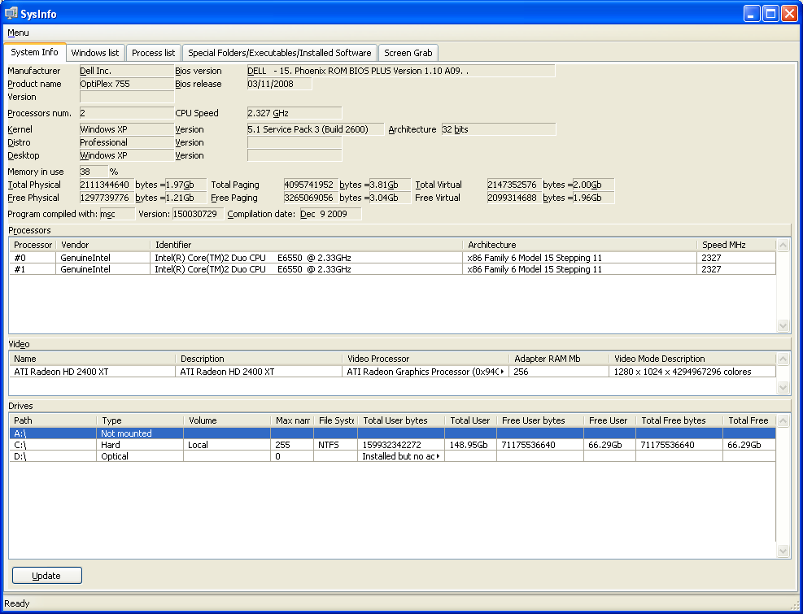

SysInfo_Demo_Gui
SysInfo_Demo_Gui package does a visual review of classes and features of SysInfo and Functions4U packages. Here there are some screenshots of the different tabs:
System Info tab
It includes general hardware, hard disk and OS info.

Windows list tab
It includes the opened windows data including process and program that launched the window.
Process list tab
This is the list of processes with priority (if available).
Special Folders/Executables/Installed software
It includes a sample of default executables for opening file extensions (.xyz does not executable to open it, so the field is empty), special folders and list of software installed (in Windows).
To fill the installed software list, as it is a slow process, it is necessary to press bottom left button.
Screen grab
With this tab it is possible to get screen pictures and simple video clips.
Mode
This option lets to choose the Desktop area to be captured:
Desktop: Full screen
Window: The window with the indicated Title. Only visible part of the window will be captured
Rectangle: The rectangle limited by its dimensions in pixels
Video Grab
To get a video clip just choose recording time in seconds, number of seconds per frame and indicate if it is necessary to grab the mouse movement. After that press "Record it!" and that is all.
Image snapshot
To get an image snapshot just choose the file name and press "Snap it!"
Mouse & Keyboard
These functions let to simulate mouse movement and clicks, and inject text including international languages.
Get/SetKeylockStatus() buttons show the key lock status and permit to change it by clicking
Keyb_SendKeys() inject keystrokes to text editor
Mouse_SetPos, LeftDown/Up() moves the program window by simulating mouse drag on the window header
RemoveAccents() changes the accented letters with the most approximate ascii characters.

|
{kind=link}
{kind=link}
{kind=link}
{kind=link}
{kind=link}